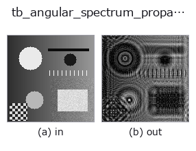

typed op• 데이터 종류: cimage → cimage
• 호출: fullseye.apply(img, "tb_angular_spectrum_propagate", a=0.5, b=0.5)(2-D 는 이미지 1 장 + 스칼라 노브 2 개 a,b∈[0,1] 모델)

*그림은 128×128 합성 입력에서 실제로 실행한 출력. 왼쪽이 입력, 오른쪽이 출력. 점군은 위에서 본 산점도(밝기 = z), 1-D 열은 꺾은선, 볼륨은 z 방향 최대값 투영, 동영상은 가운데 프레임, 복소 영상은 진폭이며, 그림이 되지 않는 반환값은 값 자체를 표시한다.*
노브 a 를 훑기(0.1 / 0.5 / 0.9, 다른 노브는 기본값):
▸ tb_angular_spectrum_propagate: knob a sweep (docs site)
노브 b 를 훑기(0.1 / 0.5 / 0.9, 다른 노브는 기본값):
▸ tb_angular_spectrum_propagate: knob b sweep (docs site)
단계(앞에 오는 op → 이 op, 왼쪽에서 오른쪽으로):
▸ tb_angular_spectrum_propagate: stages (docs site)
다른 영상에서도(합성 장면 / 사진 / 동전. 윗줄이 입력, 아랫줄이 그 출력. 노브는 기본값):
▸ tb_angular_spectrum_propagate: other inputs (docs site)
복소수 장의 정확한 스칼라 자유공간 전파(각스펙트럼법).
> 아래 상세 설명은 원문입니다 —— 요약과 제목은 번역되어 있습니다.
`U(z) = IFFT{ FFT{U(0)} * exp(i*2*pi*z*sqrt(1/lambda^2 - fx^2 - fy^2)) }`
in the `exp(-i*omega*t)` convention, so a positive *distance_um*
propagates forward. Components beyond the propagating cone
(`fx^2 + fy^2 > 1/lambda^2`) are attenuated by
`exp(-2*pi*|z|*sqrt(fx^2 + fy^2 - 1/lambda^2))`, which is the physical
evanescent decay — not zeroed, so `distance_um = 0` is an *exact*
identity and the transfer function is continuous through it.
Unlike Fresnel propagation this makes no paraxial approximation: it is the
exact solution of the Helmholtz equation for a band-limited field, valid
from a fraction of a wavelength outward.
Returns a complex128 array with the same shape as *field*.
Ground truth it reproduces (measured): `distance_um = 0` returns the field
bit-identically (it short-circuits the transform pair); propagating `+z`
then `-z` returns the original to a relative L2 error of 4.3e-16 to
5.3e-16 for a band-limited field (measured on three: 64x64 random at
+/-50 um, a 64x64 Gaussian at +/-250 um, a 128x128 random at +/-500 um);
total power is conserved to between 0 and 3.5e-16 relative on the same
three. A field *with*
evanescent content does not round-trip — those components are gone by
construction, in both directions, because that is what physically happens.
*field* is a field in the space domain, not a spectrum: do not hand it
the fftshifted output of :func:complexops.cx_fft. Real input is promoted
to complex, which loses nothing.
Aliasing: the discrete transfer function is periodic, so a field that
diffracts past the array edge wraps around. The practical guard is the
usual one — pad the field so the propagated support stays inside, and keep
`pixel_pitch_um below lambda/(2*NA)`. No warning can detect this
reliably from the array alone, so none is invented.
Raises `ValueError`: *field* is not 2-D, smaller than 2x2, larger than
:data:MAX_FIELD_ELEMENTS, masked, or non-finite; non-positive or
non-finite *wavelength_um* / *pixel_pitch_um*; non-finite *distance_um*.
Typed bridge of the optics op `angular_spectrum_propagate into the 2-D evolution registry: the same implementation, called under the op(v, a, b) convention. a drives wavelength_um (default 0.55) and b drives distance_um` (default 100).
• 샘플 데이터 카탈로그(DL URL / 라이선스) —— 2-D 는 skimage.data(BSD/public)+ 합성, 3-D 는 실데이터 소스(Stanford/PDS 등)의 DL URL.
• 연산자의 내력·참고문헌 —— 이 연산자 족의 바탕이 된 연구/기법의 출처.
아래 프로그램은 실제로 실행됨을 확인했습니다(그림과 같은 입력). Studio 도움말에서는 이 블록이 버튼이 되어 즉시 불러와 실행할 수 있습니다.
img_to_cimage 0.50 0.50 tb_angular_spectrum_propagate 0.50 0.50
▸ Load this pipeline · Load & run
아래 예제는 원래의 대장 op angular_spectrum_propagate를 호출한다. 이 브리지 op는 같은 구현을 fn(v, a, b) 규약에 맞춘 것뿐이므로 동작은 그대로 적용된다(호출 형식만 다름).
• optics_imaging — py -3.11 examples/optics_imaging.py
cimage 를 입력으로 받는 것)identity · tb_cx_ifft · tb_cx_magnitude · tb_cx_phase · tb_cx_real · tb_cx_imag · tb_cx_log_magnitude · tb_cx_apply_transfer_function
typed)tb_points_to_voxel · tb_estimate_point_normals · tb_iss_keypoints · tb_project_points · tb_render_point_depth · tb_statistical_outlier_removal · tb_radius_outlier_removal · tb_voxel_grid_downsample
*Provenance: ops.py — 2D 연산자 레지스트리. 이 op 노트는 tools/opdocs.py md 가 자동 생성합니다(직접 편집하지 마세요).*
© 2026 Kazufumi Furuse — Fullseye operator documentation. Licensed under Apache-2.0.
{kind=link}
{kind=link}
{kind=link}
{kind=link}